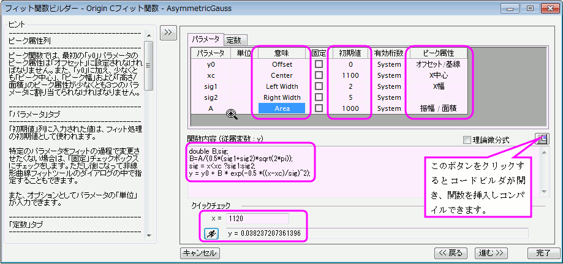
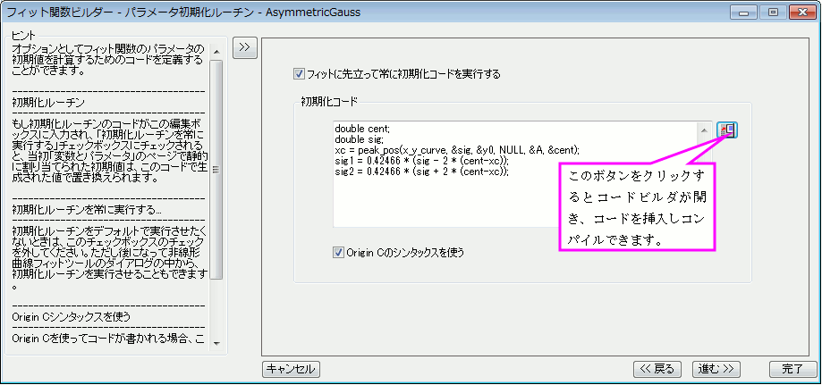
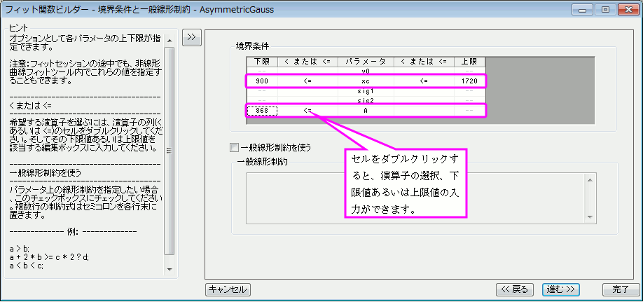
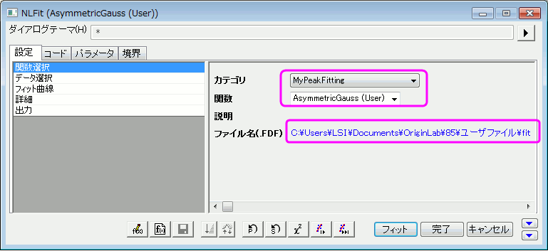
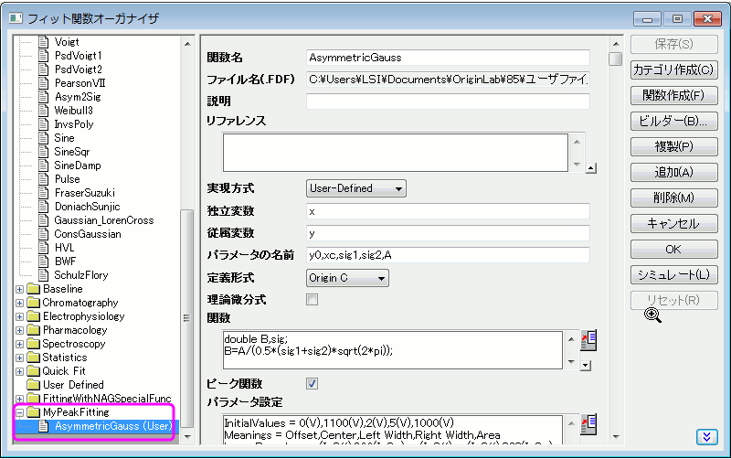
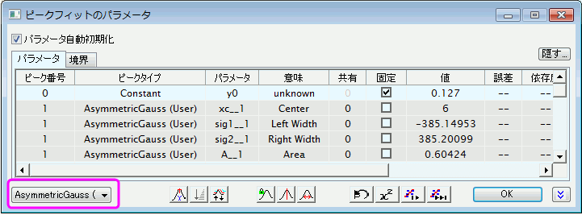

フィット関数ビルダで新しいフィット関数を作成する方法を示す簡単なサンプル
サマリー
このチュートルアルは、フィット関数ビルダでフィット関数を作成する方法を示します。
必要なOriginのバージョン:Origin 8.5 SR0
学習する項目
- ピークフィット関数を定義する方法
- 関数本体の書き方
- 初期化コードの書き方
- パラメータの境界のセットの仕方
ステップ
- Originのメニューで、ツールからフィット関数ビルダを選び、ツールを開きます。最初(処理のゴール)ページで新しい関数の作成をクリックして、進むボタンをクリックして関数名と関数形式ページを開きます。
- 関数名と関数形式ページでは新しいフィット関数のためにカテゴリを作成する事も可能です。今回はUser Definedのカテゴリで関数の名前と関数の種類を選択します。
- 作成をクリックして、カテゴリー名ダイアログを開き、新しいカテゴリー名としてMyPeakFitting を入力します。
- 関数名編集ボックスにAsymmetricGaussと入力します。
- 関数形式のリストからOriginCを選びます。これに応じて左側パネルのヒントが更新されるのが分かります。
- 進むをクリックし、変数とパラメータページに移動します。
- 変数とパラメータページで、以下を行います。
- 独立変数および従属変数として x と Y を入力します。
- パラメータ編集ボックスにy0, xc, sig1, sig2, A を入力します。
- ピーク関数ボックスを有効にすると、NLFit ツールまたはピークアナライザのピークフィットでこの関数をフィットの複製に使うことができます。(Note:ピークアナライザでこれを使う前に、フィット関数オーガナイザのPFWカテゴリーでこの関数を共有する必要があります。)
- 「進む」をクリックし、関数の内容ページに移動します。
- 関数の内容ページで、関数を入力し、各パラメータのピークの属性を選択します。
- ピーク属性列のセルをクリックし、パラメータタブのxc行をクリックします。ピーク属性としてX中心を選択します。そして、パラメータsig1 と Aに対して X幅 と 振幅/面積 を選びます。
- 初期値 および意味 列に初期値およびパラメータの意味を入力します。
- 関数の内容編集ボックスに次の行すべてをコピー＆ペーストします。
-
-
-
- double B,sig;
- B=A/(0.5*(sig1+sig2)*sqrt(2*pi));
- sig = x<xc ? sig1:sig2;
- y = y0 + B * exp(-0.5 *((x-xc)/sig)^2);
- 独立変数に値の入力したら、評価ボタン
 をクリックすれば簡単にフィット関数をチェックできます。
をクリックすれば簡単にフィット関数をチェックできます。
- 
- 進むをクリックし、パラメータ初期化ルーチンコードページに行き、初期化コード編集ボックスに次のコードを入力します。
-
-
-
- double cent;
- double sig;
- xc = peak_pos(x_y_curve, &sig, &y0, NULL, &A, ¢);
- sig1 = 0.42466 * (sig - 2 * (cent-xc));
- sig2 = 0.42466 * (sig + 2 * (cent-xc));
- 
- 進むをクリックし、境界条件と一般線形制約ページに行き、ダイアログを以下の図のようにセットします。
- 
- 完了ボタンをクリックします。
ユーザ定義関数にアクセスするには
- ユーザ定義関数を使って、非線形フィット機構で曲線フィットを実行します。非線形フィット機構についての詳細は、非線形曲線フィットを参照してください。
- 
- フィット関数オーガナイザで関数を検索します。フィット関数オーガナイザについての詳細は、フィット関数オーガナイザを参照してください。
- 
- フィット関数オーガナイザで、この関数を右クリックして、共有先を選択し、PFW カテゴリにこの関数を共有します。そして、この関数を使って、ピークアナライザでピークフィットを実行できます。
- 